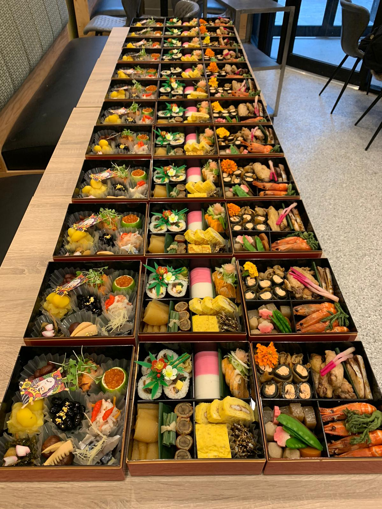

Catering for any occasion
Catering suited for any occasion. We provide customised selection of Japanese Cooking. Contact us to get the freshest selection of our menu.

Catering suited for any occasion. We provide customised selection of Japanese Cooking. Contact us to get the freshest selection of our menu.